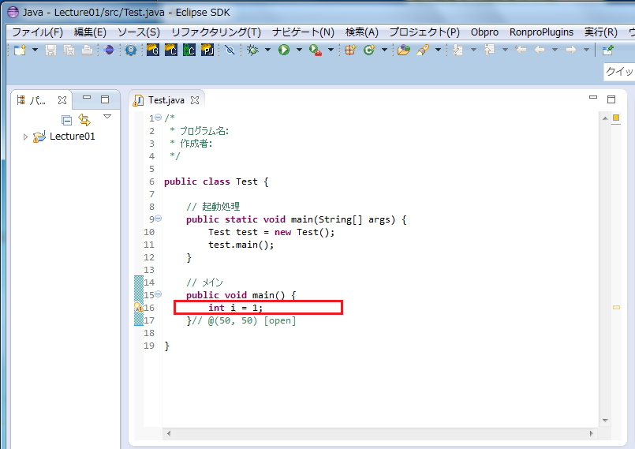
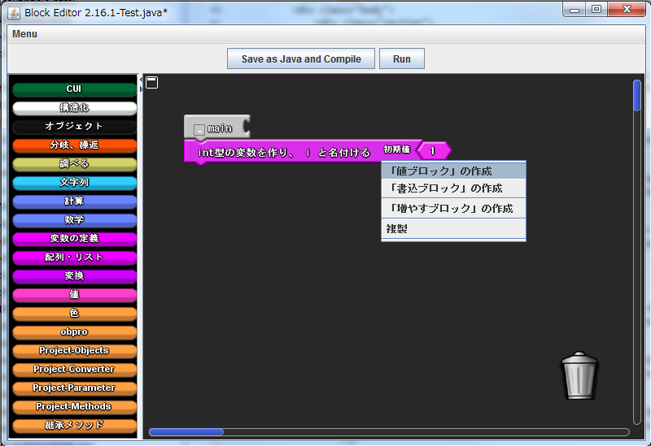

変数の宣言
変数ブロックの場所
左側にある「変数の宣言」というカテゴリ（ここではファクトリと呼びます）をクリックし，任意の型のブロックを取り出します．
変数の宣言
取り出したブロックをmainと書かれたブロックの下に結合します．
これで変数の宣言が出来ました．BlockEditor上部にある，「Sava as Java and Compile」ボタンをクリックすることで，Javaのソースコードを出力できます．

変数名の変更
変数名を変えるには，変数宣言ブロックの名前部分をクリックします．すると，キーボードから直接入力することができます．
変数への値の代入
書き込みブロックの作成
値を代入する変数の宣言ブロックを右クリックします．すると，ポップアップメニューが表示されます．この中の「「書き込みブロック」の作成」というメニューをクリックします．
値を書き込むブロックが作成されました．このブロックの右側にある凹みに，書き込む値のブロックを結合します．

数値や文字列などの値を表すブロックは，「値」というファクトリから作成することができます．
値などのブロックは，ブロックを左クリックすると値を書き換えることができます．下の例では，整数の値ブロックの値を0に書き換えています．
「Sava as Java and Compile」をクリックすると，以下の様なプログラムが出力されます．
変数の値の参照
値ブロックの作成
値を参照したい変数の宣言ブロックを右クリックします．すると，ポップアップメニューが表示されます．この中の「「値ブロック」の作成」というメニューをクリックします．

値を参照するブロックが作成されました．このブロックを利用したいブロックへ結合します．
下の例では，iという変数にiの値を代入しています．
「Sava as Java and Compile」をクリックすると，以下の様なプログラムが出力されます．